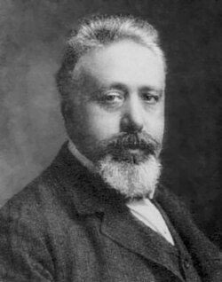

1860-1940
Vito Volterra

Portrait: Unknown authorUnknown author, Public domain, Wikimedia Commons.
Events (4)
- 1887Functional analysis
originator · Functional & harmonic analysis
- 1887Volterra functionals
originator · Functional & harmonic analysis
- 1903Fredholm integral equations
developer · Analysis
- 1920Mathematical biology
systematiser · Applied mathematics